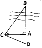
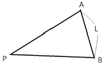
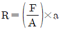
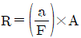
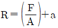
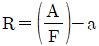

지적산업기사 (2014-08-17 기출문제)
1과목: 지적측량
1. 종선차의 부호가 (+), 횡선차의 부호가 (-)인 측선은 어느 상한에 위치하는가?
- 제1상한
- 제2상한
- 제3상한
- 제4상한
(정답률: 85%)

2. 일람도의 제도 방법으로 틀린 것은?
- 도면번호는 3mm의 크기로 한다.
- 철도용지는 검은색 0.2mm의 폭의 선으로 제도한다.
- 수도용지 중 선로는 남색 0.1mm의 폭의 2선으로 제도한다.
- 건물은 검은색 0.1mm의 제도하고 그 내부를 검은색으로 엷게 채색한다.
(정답률: 83%)
3. 토털스테이션으로 측정한 경사거리가 150.23m, 연직각이 +3°50‘25“일 때 수평거리는?
- 138.56m
- 140.25m
- 145.69m
- 149.89m
(정답률: 81%)
4. 지적삼각보조점성과표 및 지적도근점성과표에 기록 관리하여야 하는 사항에 해당하지 않는 것은?
- 번호 및 위치의 약도
- 소재지와 측량연월일
- 도선등급 및 도선명
- 측량성과 보관장소
(정답률: 75%)
5. 하천을 낀 두 점 AB간의 거리를 측정하기 위하여 측정한 AC=30m, AD=29.6m였을 때, AB간의 거리는?

- 30.39m
- 26.51m
- 20.39m
- 13.51m
(정답률: 68%)
6. 경위의측량방법과 교회법에 따른 지적삼각보조점측량에서 수평각의 관측방법은?
- 방향관측법
- 배각관측법
- 방위각관측법
- 각 관측법
(정답률: 69%)
7. 측선의 방위가 S 60° 20' 30"E일 때, 이 측선의 방위각은?
- 60°20‘30“
- 119°39‘30“
- 240°20‘30“
- 229°39‘30“
(정답률: 71%)
8. 트랜싯 조작에서 시준선이란?
- 접안렌즈의 중심과 대물렌즈의 광심을 연결하는 선
- 눈으로 내다보는 선
- 십자선의 교점과 대물렌즈의 광심을 연결하는 선
- 접안렌즈의 중심선
(정답률: 69%)
9. 경위의측량방법에 따라 교회법으로 지적삼각보조점측량을 할 때, 지형상 부득이 2방향의 교회에 의하여 결정하려는 경우 각 내각을 관측하여 각 내각의 관측치의 합계가 180도 와의 차가 ±40초 이내일 때 이를 배분하는 방법은?
- 각 내각의 크기에 비례하여 배분한다.
- 각 내각의 크기에 반비례하여 배분한다.
- 각 내각에 고르게 배분한다.
- 허용오차 이내이므로 관측 내각에 배분할 필요가 없다.
(정답률: 68%)
10. 지적측량 중 기초측량에서 사용하는 방법이 아닌 것은?
- 경위의 측량방법
- 평판측량방법
- 위성측량방법
- 광파기측량방법
(정답률: 77%)
11. 지적도근점을 구성할 때 사용할 수 없는 도선은?
- 결합도선
- 폐합도선
- 개방도선
- 왕복도선
(정답률: 92%)
12. 지적도근점측량에서 도선의 표기방법이 옳은 것은?
- 1등도선은 A, B, C 순으로 표기한다.
- 1등도선은 가, 나, 다 순으로 표기한다.
- 2등도선은 (1), (2), (3) 순으로 표기한다.
- 2등도선은 1, 2, 3 순으로 표기한다.
(정답률: 95%)
13. 평판측량방법에 따른 세부측량을 교회법으로 하는 경우 방향각의 교각 범위는?
- 45° 이상 90° 이하
- 30° 이상 120° 이하
- 30° 이상 150° 이하
- 0° 이상 180° 이하
(정답률: 80%)
14. 평판측량방법에 따른 세부측량을 도선법으로 하는 경우, 도선의 변은 최대 몇 개 이하로 하여야 하는가?
- 10개
- 20개
- 30개
- 40개
(정답률: 85%)
15. 전파기 측량방법에 따라 다각망도선법으로 지적삼각점보조점측량을 하는 기준으로 틀린 것은?
- 1도선은 기지점과 교점 간 또는 교점과 교점 간을 말한다.
- 1도선의 거리는 기지점과 교점 간의 점간거리의 총합계를 말한다.
- 1도선 거리는 3킬로미터 이상으로 한다.
- 1도선 점의 수는 기지점과 교점을 포함하여 5점 이하로 한다.
(정답률: 75%)
16. 가구 정점 P의 좌표를 구하기 위한 길이 ℓ은 얼마인가? (단, AP=BP, L=10m, θ=68°)

- 8.94m
- 7.06m
- 5.39m
- 2.67m
(정답률: 54%)
17. 토지조사사업 당시의 측량 조건으로 틀린 것은?
- 일본의 동경 원점을 이용하여 대삼각망을 구성하였다.
- 통일된 원점 체계를 전 국토에 적용하였다.
- 가우스상사이중투영법을 적용하였다.
- 벳셀(Bessel)타원체를 도입하였다.
(정답률: 76%)
18. 잔차의 제곱의 합이 최소가 되도록 수학적ㆍ통계적으로 조정함으로써 지적 측량의 정확도를 높이는 방법은?
- 확률
- 경중률
- 표준오차
- 최소제곱법
(정답률: 83%)
19. 축척 1/500 지적도에서 도곽선의 신축량이 △X=+1.5mm, △Y=+1.5mm일 때 보정계수는?
- 0.9913
- 0.9825
- 0.9923
- 0.8299
(정답률: 35%)
20. 축척 100분의 1지역에서 면적을 계산할 경우 각 필지의 산출면적을 구하는 식은? (단, R:각 필지의 산출면적, F:원면적, A:보정면적의 합계, α:각 필지의 보정면적)




(정답률: 73%)
2과목: 응용측량
21. 수준측량에서 시점의 지반고가 100m이고, 전시의 총합은 107m, 후시의 총합은 125m일 때 종점의 지반고는?(오류 신고가 접수된 문제입니다. 반드시 정답과 해설을 확인하시기 바랍니다.)
- 332m
- 232m
- 118m
- 82m
(정답률: 7%)
22. 축척 1:10,000으로 촬영된 수직사진을 이용하여 판독할 때 가장 구별하기 어려운 것은?
- 하천과 도로
- 농로와 용수로
- 우체국과 구청
- 등대와 고압송전선의 철탑
(정답률: 71%)
23. 노선측량에 사용되는 곡선 중 주요 용도가 다른 것은?
- 2차 포물선
- 3차 포물선
- 클로소이드 곡선
- 렘니스케이트 곡선
(정답률: 91%)
24. A, B점의 표고가 각각 125m, 153m이고, 2점 간의 수평거리가 250m일 때, AB 선상의 표고 140m인 C점에 대한 A, C점 간의 수평거리는? (단, A, B간은 등경사이다.)
- 132.63m
- 133.93m
- 134.93m
- 135.93m
(정답률: 69%)
25. 2km 왕복 직접수준측량에 ±10mm 오차를 허용한다면 동일한 정확도로 측량하여 4km를 왕복 측량할 때 허용오차는?
- ±8mm
- ±14mm
- ±20mm
- ±24mm
(정답률: 75%)
26. 지형측량에서 기설 삼각점만으로 세부측량을 실시하기에 부족할 경우 새로운 기준점을 추가적으로 설치하는데 이 점을 무엇이라고 하는가?
- 경사변환점
- 방향변환점
- 도근점
- 이기점
(정답률: 85%)
27. 건설현장 중 부지의 정지 작업을 위한 토량 산정 또는 저수지의 용량 등을 측정하는 데 주로 사용되는 방법은?
- 영선법
- 음영법
- 채색법
- 등고선법
(정답률: 75%)
28. 곡선설치법 중 1/4법이라고도 하며, 시가지에서의 곡선 설치나 보도 설치 및 기설 곡선의 검사 또는 수정에 주로 사용되는 방법은?
- 중앙종거법
- 접선편거법
- 접선지거법
- 편각현장법
(정답률: 77%)
29. 지하시설물 관측방법 중에서 지하를 단층 촬영하여 시설물의 위치를 탐사하는 방법은?
- 전기탐사법
- 자정탐사법
- 전자탐사법
- 지중레이더탐사법
(정답률: 68%)
30. 곡선반지름 R=300m, 교각 I=50°인 단곡선 접선길이(TL)와 곡선길이(CL)는?
- TL=126.79m, CL=261.80m
- TL=139.89m, CL=261.80m
- TL=126.79m, CL=361.75m
- TL=139.89m, CL=361.75m
(정답률: 81%)
31. 평균 표고 500m인 평탄지를 비행고도 3,000m에서 초점거리 200mm인 카메라로 촬영한 사진의 축척과 사진의 크기가 23cm×23cm일 때 유효면적은?
- 1:12,500, 9.27km2
- 1:12,500, 8.27km2
- 1:20,000, 9.27km2
- 1:20,000, 8.27km2
(정답률: 65%)
32. 수치사진측량에서 수치영상을 취득하는 방법과 거리가 먼 것은?
- 항공사진 디지타이징
- 디지털 센서의 이용
- 항공사진필름 제작
- 항공사진 스캐닝
(정답률: 68%)
33. 촬영고도 1,250m에서 촬영한 항공사진의 주점에서 12cm 떨어진 위치에 투영된 어느 산정(山頂)의 높이가 150m라면 이 산정의 사진에서의 기복 변위량은?
- 4mm
- 8mm
- 11mm
- 14mm
(정답률: 64%)
34. 철도, 도로, 수로 등과 같이 폭이 좁고 길이가 긴 시설물을 현지에 설치하기 위한 노선측량에서 원곡선 설치에 대한 설명으로 틀린 것은?
- 철도, 도로 등에는 차량의 운전에 편리하도록 단곡선보다는 복심곡선을 많이 설치하는 것이 좋다.
- 교통안전상의 관점에서 방향곡선은 가능하면 사용하지 않는 것이 좋고 불가피한 경우에는 두 곡선 사이에 충분한 길이의 완화곡선은 설치한다.
- 두 원의 중심이 같은 쪽에 있고 반지름이 각기 다른 두 개의 원곡선을 설치하는 경우에는 완화곡선을 넣어 곡선이 점차로 변하도록 해야 한다.
- 고속주행하는 차량의 통과를 위하여 직선부와 원곡선 사이나 큰 원과 작은 원 사이에는 곡률반지름이 점차 변화하는 곡선부를 설치하는 것이 좋다.
(정답률: 82%)
35. 경사가 일정한 터널에서 두 점 AB간의 경사거리가 150m이고 고저차가 15m일 때 AB간의 수평거리는?
- 149.2m
- 148.5m
- 147.2m
- 146.5m
(정답률: 65%)
36. 지표면에서 거리가 500m인 두 수직터널의 깊이가 모두 800m라고 하면 두 수직터널 간 지표면에서의 거리와 깊이 800m에서의 거리에 대한 차는? (단, 지구는 구로 가정하고 곡률반지름은 6.37km이며 지구중심방향으로 각 800m씩 굴착한다.)
- 6.3cm
- 7.3cm
- 8.3cm
- 9.3cm
(정답률: 43%)
37. 축척 1:25,000 지형도에서 간곡선의 간격은?
- 1.25m
- 2.5m
- 5m
- 10m
(정답률: 81%)
38. 비행고도가 2,700m이고 초점거리가 15cm인 사진기로 촬영한 수직사진에서 50m 교량의 도상길이는?
- 1.8mm
- 2.3mm
- 2.8mm
- 3.2mm
(정답률: 72%)
39. GPS 측량에서 제어부문에서의 주 임무로 틀린 것은?
- 위성시각의 동기화
- 위성으로의 자료전송
- 위성의 궤도 모니터링
- 신호정보를 이용한 위치결정 및 시각 비교
(정답률: 56%)
40. GPS 측량에서 사용하고 있는 측지 기준계로 옳은 것은?
- WGS72
- WGS84
- Bessel 1841
- Hayford 1924
(정답률: 88%)
3과목: 토지정보체계론
41. 속성정보에 해당하지 않는 것은?
- 대지권등록부
- 토지대장
- 공유지연명부
- 지적도
(정답률: 77%)
42. 토지정보체계와 관련된 정보 체계의 연결이 틀린 것은?
- 도시정보체계-UIS
- 시설물관리체계=FM
- 환경정보체계-EIS
- 자원정보체계-BIS
(정답률: 66%)
43. 고유번호에서 행정구역 코드는 몇 자리로 구성하는가?
- 2자리
- 4자리
- 10자리
- 19자리
(정답률: 66%)
44. 지적전산화의 목적으로 옳지 않은 것은?
- 체계적이고 효율적인 지적행정을 실현한다.
- 지적 관련 민원을 신속하고 정확하게 처리한다.
- 지적통계와 정책정보의 정확성을 제고한다.
- 토지투기를 예방한다.
(정답률: 91%)
45. 위상구조에 대한 설명으로 옳은 것은?
- 노드는 3차원의 위상 기본요소이다.
- 체인은 시작노드와 끝노드에 대한 위상정보를 가진다.
- 위상구조는 래스터데이터에 적합하다.
- 최단경로탐색은 영역형 위상구조의 활용 예이다.
(정답률: 61%)
46. 도형정보의 요소인 점ㆍ선ㆍ면에 대한 설명이 틀린 것은?
- 면은 경계선 내의 영역을 정의하며 면적을 가진다.
- 선은 도면 상에 장소, 이름, 상징물(공항, 학교 등)들의 위치를 나타내는 데 주로 사용된다.
- 점은 심벌을 사용하여 지도나 컴퓨터 화면에 표현된다.
- 점은 지적기준점이 해당된다.
(정답률: 74%)
47. 데이터 모델링 작업 진행 순서의 3단계로 옳은 것은?
- 개념적 모델링→논리적 모델링→물리적 모델링
- 개념적 모델링→물리적 모델링→논리적 모델링
- 논리적 모델링→개념적 모델링→물리적 모델링
- 논리적 모델링→물리적 모델링→개념적 모델링
(정답률: 74%)
48. 기존의 종이도면을 직접 벡터데이터로 입력할 수 있는 작업으로 헤드업 방법이라고도 하는 것은?
- 스캐닝
- 디지타이징
- key-in
- CAD 작업
(정답률: 83%)
49. 벡터자료형식이 아닌 것은?
- TIFF 파일
- Shape 파일
- DLG 파일
- TIGER 파일
(정답률: 71%)
50. 우리나라가 사용하고 있는 지적공부광리시스템 중 가장 최신 시스템은?
- PBLIS
- KLIS
- LMIS
- EIS
(정답률: 74%)
51. 한국토지정보시스템의 구축에 따른 기대효과로 가장 거리가 먼 것은?
- 다양하고 입체적인 토지정보를 제공할 수 있다.
- 민원처리 기간은 단축하고 온라인으로 서비스를 제공할 수 있다.
- 각 부서 간의 다양한 토지 관련 정보를 공동으로 활용하여 업무의 효율을 높일 수 있다.
- 건축물의 유지 및 보수 현황의 관리가 용이해진다.
(정답률: 87%)
52. 도형자료의 위상 관계에서 관심 대상의 좌측과 우측에 어떤 사상이 있는지를 정의하는 것은?
- 인접성(Adjacency)
- 연결성(Connectivity)
- 근접성(Proximity)
- 계급성(Hierarchy)
(정답률: 74%)
53. 데이터 언어에 대한 설명으로 틀린 것은?
- 데이터 제어어(DCL)는 데이터를 보호하고 관리하는 목적으로 사용한다.
- 데이터 조작어(DML)에는 질의어가 있으며, 질의어는 절차적(Procedural) 데이터 언어이다.
- 데이터 정의어(DDL)는 데이터베이스를 정의하거나 수정할 목적으로 사용한다.
- 데이터 언어는 사용 목적에 따라 데이터 정의어, 데이터조작어, 데이터 제어어로 나누어 진다.
(정답률: 77%)
54. 지적소관청이 대장전산자료에 오류가 발생하여 이를 정비한 경우, 그 정비내역은 몇 년 간 보존하여야 하는가?
- 1년
- 3년
- 5년
- 영구
(정답률: 59%)
55. 중앙 집중형 지리정보시스템과 비교하여 분산 처리시스템이 갖는 장점이 아닌 것은?
- 자원 공유 가능
- 연산 속도 향상
- 네트워크 속도 향상
- 창조성 향상
(정답률: 73%)
56. 서로 다른 레이어 간에 존재하는 동일한 객체의 크기와 형태가 동일하게 되도록 보정하는 방식은?
- 동형화(Conflation)
- 경계 부합(Edge Matching)
- 좌표삭감(Line Coordinate Thinning)
- 타일링(Tilng)
(정답률: 73%)
57. 벡터자료의 특징으로 옳은 것은?
- 정확도는 격자가 나타내는 면적으로 표시한다.
- 공간 객체의 위치는 행이나 열로 표시한다.
- 객체의 위치를 공간상에서 방향성과 크기를 가지고 나타낸다.
- 격자 상의 일정한 수치값으로 지표면의 특성을 표현한다.
(정답률: 63%)
58. 토지대장 전산화를 위하여 실시한 준비 사항이 아닌 것은?
- 지적법령의 정비
- 토지ㆍ임야대장의 카드화
- 면적 표시의 평단위 통일
- 소유권 주체의 고유번호 코드화
(정답률: 66%)
59. 언더슈트, 오버슈트, 스파이크, 슬리버는 무엇에 관한 용어인가?
- 기계적인 오차
- 스캐닝에 관계된 오차
- 디지타이저에 의한 독취 과정에서 발생하는 오차
- 입력도면의 평탄성 오차
(정답률: 82%)
60. 발전단계에 따른 지적제도 중 토지정보체계의 기초가 되는 것은?
- 과세지적
- 법지적
- 소유지적
- 다목적지적
(정답률: 74%)
4과목: 지적학
61. 1980년 이후 현재 지번 부여 원칙으로 옳은 것은?
- 북서에서 남동으로 순차적으로 부여
- 남서에서 북동으로 순차적으로 부여
- 북동에서 남서로 순차적으로 부여
- 남동에서 북서로 순차적으로 부여
(정답률: 81%)
62. 다음 지적의 기능 중 거리가 먼 것은?
- 도시 및 국토계획의 원천
- 토지감정평가의 기초
- 토지기록의 법적 효력과 공시
- 지리적 요소의 결정
(정답률: 67%)
63. 지번의 부여방법 중 진행방향에 따른 분류가 아닌 것은?
- 절충식
- 오결식
- 사행식
- 기우식
(정답률: 75%)
64. 다음 중 토지소유권 보호를 목적으로 하는 지적제도의 유형으로 옳은 것은?
- 경제지적
- 법지적
- 세지적
- 다목적지적
(정답률: 89%)
65. 밤나무 숲을 측량한 지적도로 탁지부 임시재산정리국 측량과에서 실시한 측량원도의 명칭으로 옳은 것은?
- 관저원도
- 율림기지원도
- 산록도
- 궁채전도
(정답률: 86%)
66. 공유지연명부의 등록사항이 아닌 것은?
- 지목
- 토지의 고유번호
- 소유권 지분
- 소유자의 주민등록번호
(정답률: 46%)
67. 지목부호는 다음 중 어느 공부에 표기하는가?
- 토지대장
- 지적도
- 임야대장
- 경계점좌표등록부
(정답률: 67%)
68. 지적공부정리를 위한 토지이동의 신청을 하는 경우, 측량을 요하지 않는 토지이동은?
- 등록전환
- 면적정정
- 경계정정
- 합병
(정답률: 86%)
69. 일본의 국토에 대한 기초조사로 실시한 국토조사사업에 해당되지 않는 것은?
- 임야수종조사
- 토지분류조사
- 지적조사
- 수조사(水調査)
(정답률: 58%)
70. 다음 중 근대적 세지적의 완성과 소유권제도의 확립을 위한 지적제도 성립의 전환점으로 평가되는 역사적인 사건은?
- 윌리엄 1세의 영국 둠스데이 측량 시행
- 나폴레옹 1세의 프랑스 토지관리법 시행
- 솔리만 1세의 오스만제국 토지법 시행
- 디오클레시안 황제의 로마제국 토지측량 시행
(정답률: 84%)
71. 물권 설정 측면에서 지적의 3요소로 볼 수 없는 것은?
- 토지
- 등록
- 공부
- 국가
(정답률: 86%)
72. 현재 우리나라의 토지대장 편성방식은?
- 물적 편성주의
- 인성편성주의
- 연대적 편성주의
- 물적ㆍ인적 편성주의
(정답률: 67%)
73. 지적도 작성방법 중 지적도면 자료나 영상자료를 래스터(Raster) 방식으로 입력하여 수치화하는 장비로 옳은 것은?
- 스캐너
- 디지타이저
- 자동복사기
- 키보드
(정답률: 83%)
74. 조선시대 양전의 개혁을 주장한 학자가 아닌 사람은?
- 서유구
- 이기
- 정약용
- 김응원
(정답률: 73%)
75. 토지사정선의 설명 중 가장 옳은 것은?
- 시장, 군수가 측량한 모든 경계선이다.
- 임시토지조사국에서 측량한 모든 경계선이다.
- 강계선(疆界線)은 모두 사정선이다.
- 토지의 분할선 또는 경계 감정선이다.
(정답률: 70%)
76. 다음 중 토지조사사업 당시 불복신립 및 재결을 행하는 토지소유권의 확정에 관한 최고의 심의기관은?
- 도지사
- 임시토지조사국장
- 고등토지조사위원회
- 임야조사위원회
(정답률: 84%)
77. 지적제도상 효율적인 소유권 보호의 목적을 실현하기 위한 기능으로 가장 대표적인 것은?
- 필지의 획정(劃定)
- 주소로서 지번 설정
- 등기통지서의 정리
- 신규등록지 소유권 설정
(정답률: 67%)
78. 경국대전에서 매 20년마다 토지를 개량하여 작성했던 양안의 역할은?
- 가옥규모 파악
- 세금징수
- 상시 소유자 변경 등재
- 토지거래
(정답률: 80%)
79. 토지의 표시사항은 지적공부에 등록, 공시하여야만 효력이 인정된다는 토지등록의 원칙은?
- 형식주의
- 신청주의
- 공신주의
- 직권주의
(정답률: 78%)
80. 초기에 부여된 지목명칭의 변경을 잘못 연결한 것은?
- 공원지→공원
- 사사지→사적지
- 분묘지→묘지
- 운동장→체육용지
(정답률: 79%)
5과목: 지적관계
81. 지적공부의 복구자료로 활용할 수 없는 것은?
- 측량 결과도
- 지적공부의 등본
- 토지이동정리 결의서
- 매매 계약서
(정답률: 74%)
82. 지적소관청은 지번에 결번이 생긴 때 그 사유를 어디에 적어 영구히 보존하여야 하는가?
- 결번대장
- 토지대장
- 집계부
- 지적공부정리 결의서
(정답률: 80%)
83. 지적측량 적부심사청구를 받은 시ㆍ도지사가 지방지적 위원회에 회부할 때 조사하여야 하는 사항이 아닌 것은?
- 지적측량자의 의견서
- 다툼이 되는 지적 측량의 경위 및 그 성과
- 해당 토지에 대한 토지이동 및 소유권 변동 연혁
- 해당 토지 주변의 측량기준점, 경계, 주요구조물 등 현황 실측도
(정답률: 62%)
84. 사용자권한 등록관리청에 해당하지 않는 것은?
- 국토교통부장관
- 지적소관청
- 시ㆍ도지사
- 대한지적공사장
(정답률: 88%)
85. 보증보험에 가입한 지적측량 수행자가 보증보험기간의 만료로 인하여 다시 보증보험에 가입하려는 경우 그 기준은?
- 그 보증기간 만료일까지 가입하여야 한다.
- 그 보증기간 만료일 30일 전까지 가입하여야 한다.
- 그 보증기간 만료일 후 30일 이내에 가입하여야 한다.
- 그 보증기간 만료일 전후 10일 이내에 가입하여야 한다.
(정답률: 61%)
86. 지적공부의 보존 등에 관한 설명으로 틀린 것은?
- 지적소관청은 해당 청사에 지적서고를 설치하고 지적공부를 영구히 보존하여야 한다.
- 천재지변이나 그 밖에 준하는 재난을 피하기 위하여 필요한 경우 해당 청사 밖으로 지적공부를 반출할 수 있다.
- 지적서고의 설치기준, 지적공부의 보관방법 및 반출승인절차 등에 필요한 사항은 지적소관청이 정한다.
- 국토교통부장관은 보존하여야 하는 지적공부가 멸실될 경우를 대비하여 지적공부를 복제하여 관리하는 시스템을 구축하여야 한다.
(정답률: 60%)
87. 축척변경에 따른 청산금 산출 시 지적소관청은 언제를 기준으로 그 축척변경 시행지역의 토지에 대한 지번별 제곱미터당 금액을 미리 조사하여야 하는가?
- 형질변경 조서작성 완료일 현재
- 축척변경 시행공고일 현재
- 축척변경 측량완료일 현재
- 경계점표지 설치일 현재
(정답률: 79%)
88. 지적소관청의 등기촉탁 대상이 아닌 것은?
- 신규등록
- 지번변경
- 축척변경
- 바다로 된 토지의 등록말소
(정답률: 67%)
89. 지적소관청이 지적공부의 등록사항에 잘못이 있는지를 직권으로 조사ㆍ측량하여 정정할 수 없는 경우는?
- 지적공부의 등록사항이 잘못 입력된 경우
- 지적공부의 작성 또는 재작성 당시 잘못 정리된 경우
- 임야도에 등록된 필지의 면적이 등가하고 경계의 위치가 잘못된 경우
- 토지이동정리 결의서의 내용과 다르게 정리된 경우
(정답률: 76%)
90. 다음 중 합병 신청을 할 수 있는 것은?
- 합병하려는 토지가 축척변경을 시행하고 있는 지역의 토지와 그 지역 밖의 토지인 경우
- 합병하려는 각 필지의 지반이 연속되지 아니한 경우
- 합병하려는 토지의 지적도 및 임야도의 축척이 서로 다른 경우
- 합병하려는 토지의 소유 형태가 공동소유인 경우
(정답률: 81%)
91. 지적소관청에서 1필지에 대한 경계점좌표등록부의 열람신청과 등본 발급 신청 시 납부해야 할 수수료는?
- 열람:200원, 등본발급:300원
- 열람:300원, 등본발급:500원
- 열람:500원, 등본발급:700원
- 열람:무료, 등본발급:무료
(정답률: 56%)
92. 등록전환에 대한 설명으로 옳은 것은?
- 미등록된 토지를 토지대장에 등록하는 것
- 임야대장에 등록된 토지를 토지대장으로 옮겨 등록하는 것
- 축척 1,200분의 1을 축척 600분의 1로 바꾸어 등록하는 것
- 지적도에 등록된 토지가 형질변경으로 인하여 다른 지목으로 변경되는 것
(정답률: 76%)
93. 주된 용도의 토지에 편입하여 1필지로 할 수 있는 경우는?
- 주된 용도의 토지의 편의를 위하여 설치된 구거 부지
- 주된 용도의 토지의 지목이 “대”인 경우
- 주된 용도의 토지의 10%를 초과하는 종된 토지
- 주된 용도의 토지의 면적이 330m2를 초과한 경우
(정답률: 77%)
94. 지적측량업의 영업 정지대상이 되는 위반행위가 아닌 것은?
- 고의 또는 과실로 측량을 부정확하게 한 경우
- 정당한 사유없이 측량업의 등록을 한 날부터 계속하여 1년 이상 휴업한 경우
- 지적측량업자가 법에서 규정한 업무 범위를 위반하여 지적측량을 한 경우
- 거짓이나 그 밖의 부정한 방법으로 지적측량업의 등록을 한 경우
(정답률: 49%)
95. 중앙지적위원회의 위원장 및 부위원장을 제외한 위원의 임기는?
- 1년
- 2년
- 3년
- 4년
(정답률: 87%)
96. 지적공부에 해당하지 않는 것은?
- 지적도
- 일마도
- 공유지연명부
- 임야도
(정답률: 86%)
97. 대지권 등록부에 등록하여야 할 사항이 아닌 것은?
- 토지의 소재
- 지번
- 지목
- 대지권의 비율
(정답률: 53%)
98. 지목의 설정에 대한 내용으로 틀린 것은?
- 영구적 건축물 중 자동차운전학원의 부지는 “잡종지”로 한다.
- 교통운수를 위하여 일정한 궤도 설비와 형태를 갖추어 이용되는 역사(驛舍)의 부지는 “대”로 한다.
- 일반 공증의 위락, 휴양 등에 적합한 시설물을 종합적으로 갖춘 어린이 놀이터는 “유원지”로 한다.
- 육상에 인공으로 조성된 수산생물의 번식 또는 양식을 위한 시설을 갖춘 부지는 “양어장”으로 한다.
(정답률: 72%)
99. 토지의 이동에 해당하지 않는 것은?
- 지목 변경
- 신규등록
- 소유자변경
- 등록사항 정정
(정답률: 53%)
100. 측량수로조사 및 지적에 관한 법률상 지목의 종류가 아닌 것은?
- 목장용지
- 학교용지
- 주유소용지
- 운동장
(정답률: 65%)